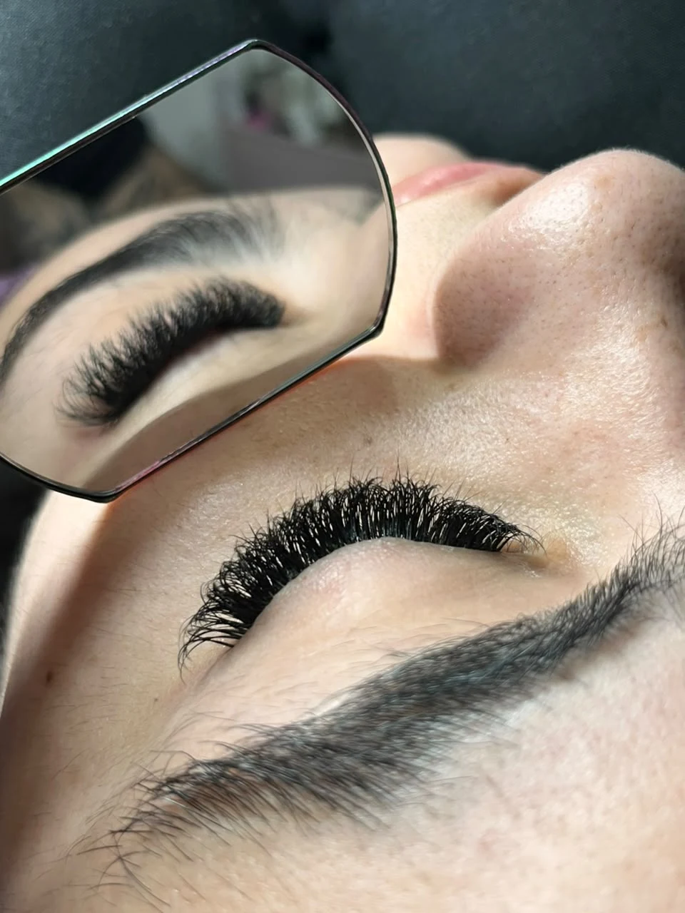

Extensão de cílios
Cílios ao seu estilo.
Extensão de cílios com Victória Soares. Do acabamento delicado ao olhar mais marcante.

Técnicas
Escolha seu volume
Conheça os dois acabamentos e veja qual combina com seu estilo.
Portfólio
Resultados de perto
Explore cada técnica e toque em uma foto para ampliar.
Delicado e natural
Volume Brasileiro
Volumoso e marcante
Volume Egípcio
Sobre o estúdio
Conheça a Victória
Victória Soares trabalha com extensão de cílios. Ela atende com o Volume Brasileiro, de acabamento delicado, e com o Volume Egípcio, que deixa o olhar mais marcado.
Se estiver em dúvida, escolha “Ainda quero orientação” no agendamento para conversar com ela sobre o efeito que combina com você.
Agendamento
Seu próximo horário.
Selecione um dia no calendário, indique seu horário de preferência e escolha a técnica.
Agendamento de demonstração
Escolha a data, o horário e a técnica para visualizar um exemplo de pedido.
- Data e técnica
- Resumo